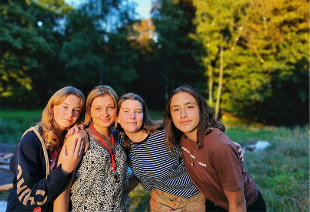
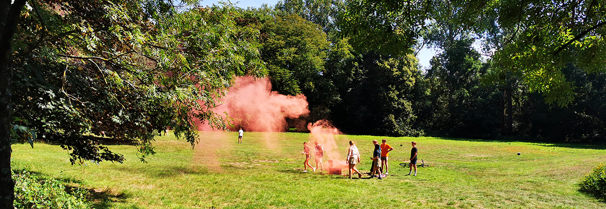

Elke zondag van 14-18u! Meestal vind je ons op Stroppen, tenzij we op activiteit zijn. Dit kan je nakijken in onze agenda .

Wij organiseren elke zondag leuke spelletjes voor iedereen dat mee wil doen, want bij ons valt niemand uit de boot! Jouw kind is welkom vanaf een leeftijd van 6 jaar en kan blijven tot zijn/haar 18 jaar. Nadien kan je kind beslissen om zelf leid(st)er te worden!
Verder kunnen we niet genoeg benadrukken dat onze Chiro voor IEDEREEN toegankelijk is en ook zal blijven! Groot, klein, ros, blond ... het maakt niet uit want onze leiding staat paraat voor iedereen! Moest je als ouder toch nog vragen hebben, aarzel dan niet om de leiding te contacteren.
Inclusie
Twee jaar geleden hebben we met de leidingsploeg besloten om mee in het inclusieproject van SVZ inclusieve jeugdbewegingen te stappen. Dit wil zeggen dat kindjes met een beperking éénmaal per maand welkom zijn om deel te nemen aan onze activiteit op zondag.
We zijn in dit traject gestapt vanuit het idee dat de Chiro voor iedereen een thuis moet kunnen vormen. Heeft je kind een beperking, maar zou hij/zij toch graag in een jeugdbeweging zitten? Dan zijn ze zeker welkom bij ons! Je contacteert hiervoor best Camille (+32 493 53 96 06)

Onze leden zijn ingedeeld volgens leeftijd. Al deze groepen worden door twee of drie enthousiaste jongvolwassenen van minstens 18 jaar oud begeleid. Als leiding volgen we zoveel mogelijk cursussen die door onze nationale en regionale Chiro-overkoepeling worden georganiseerd. Onze leidingsploeg doet dit natuurlijk geheel vrijwillig. Wij willen ervoor zorgen dat de kinderen net zo’n toffe zondagen beleven als diegene die we zelf hebben beleefd. Met andere woorden: aan motivatie geen gebrek!
In onze Chiro heerst een gezellige sfeer. Iedereen kent iedereen en ook iedereen is bij ons van tel. Dit zorgt er ook voor dat nieuwe leden zich vaak al snel thuisvoelen.
EElke zondag spelen we van 14-18u leuke spelletjes in de chirolokalen te Stroppen. Naast de vele fantastische zondagen organiseren we ook nog een tal van leuke activiteiten zoals een groepsactiviteit, een uitstap naar zee, een pastafestijn ... . En om het onvergetelijke jaar af te sluiten gaan we in de zomervakantie op een onbeschrijfelijk kamp van 21-31 augustus!
Om de twee jaar organiseren we een Sjaloomweekend. Dit is een weekend dat binnen het Chirojaar plaatsvindt en waar we met zen allen op verplaatsing gaan. Zo kunnen de kindjes al een idee ontwikkelen over wat een bivak zou inhouden, maar dan in het mini.
Onze lokalen bevinden zich op het Jeugdcentrum te Stroppen. Rij de Guido Gezellestraat af, richting jeugdcentrum. Als je met de auto komt, parkeer je je op de grote parking van het jeugdcentrum. Daarna steek je het voetbalveld over en de linkerkant van het gebouw voor je, zijn onze lokalen.